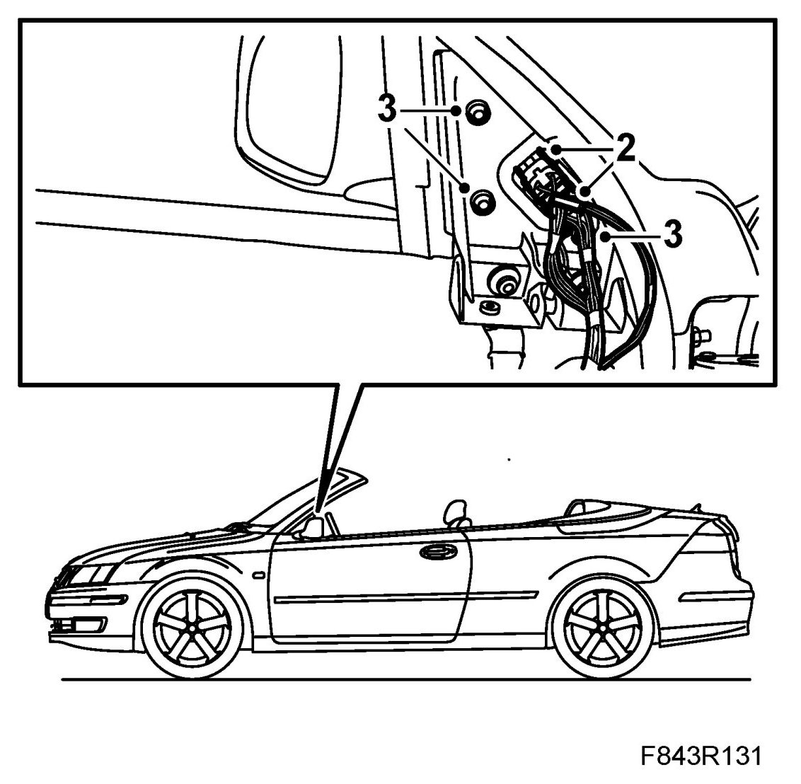
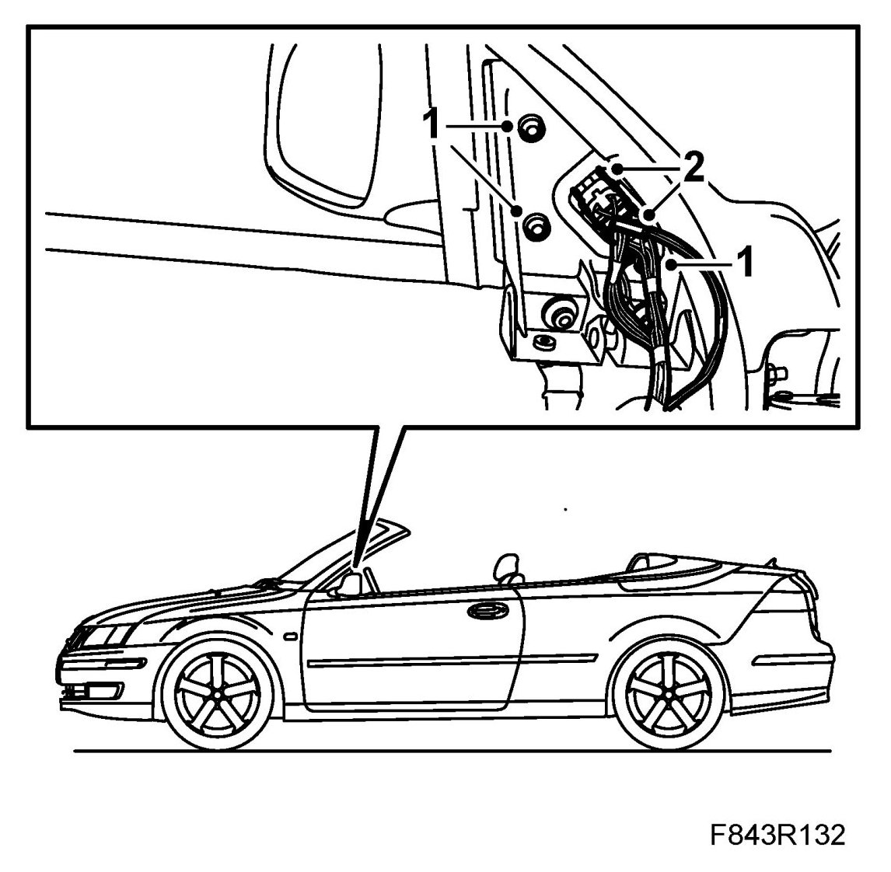

Door Mirror, CV
Door Mirror, CV
To remove
1. Remove the inner cover of the door mirror base by lifting it up.
2. Unplug the connectors.

3. Remove the door mirror screws and take away the mirror. Ensure that the screws do not fall down behind the door trim.
To fit
1. Locate and fit the door mirror in position. Ensure that the mirror is located correctly against the seal on the outside.

2. Connect the electrical connectors.
3. Fit the inner cover of the door mirror base.